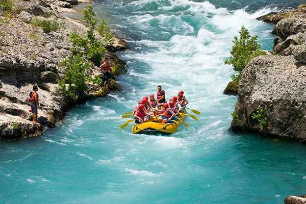
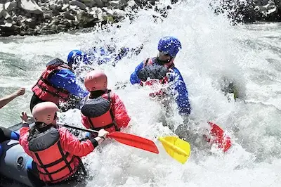
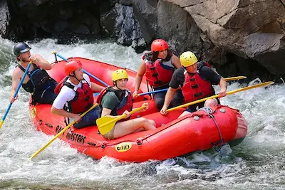
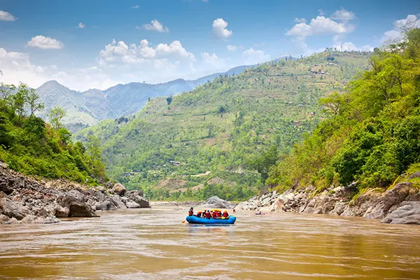

Cotton Head River
Cotton Head River is one of our favorite adventures to take people on. It features
amazing scenery, with some medium intensity rapids, giving a taste of everything
you can find in our adventures. This adventure usually takes half a day, but can run
faster after the spring rains. We recommend planning this adventure for mid to late summer.
Rattle Snake Gorge
Rattle Snake Gorge is the perfect adventure for thrill-seekers. It features long stretches of
of fast flowing rapids. This adventure is also a great introduction to some of the more
technical aspects of white water rafting, such as collision avoidance, capsizing prevention,
and portage. This adventure typically takes a few hours, and is only available in the spring
and early summer while the water runs high.


Devil's Run
Devil's Run is a stretch of river, just above Rattle Snake Gorge, that features many difficult
to navigate rapids, offering a challenging adventure for experienced white water rafters. We've
spent years learning the ins and outs of this section of river, and haven't found a better place
for a group of experienced rafters to build their relationships through intense teamwork. Due to
its placement just above Rattle Snake Gorge, many adventurers make an all day trip of Devil's Run,
lunch, then Rattle Snake Gorge.
Jeremy's Canyon
Jeremy's Canyon is a fun, relaxing adventure through multiple slot canyons. We don't know who
Jeremy was, but he must have been a pretty chill dude. These slot canyons give an unique peek
into the geological past of the area. We're no historians, but we've learned a thing or two
about the different rocks, fossils, and other deposits revealed in the canyon walls. Paired
with a lunch at the end, this makes for a fun and educational half-day trip.


Serenity's Ford
Serenity's Ford is a peaceful stretch of river at the end of Jeremy's Canyon. It's often compared
to a Lazy River's big brothers. This is a common part of the river to see people floating down due
to its slower pace and lack of rapids. This is a great adventure for families with children who
may not be able to handle navigating rapids (or struggle to avoid jumping in the water). On its own,
Serenity's Ford takes a couple of hours to flow through, however when paired with Jeremy's Canyon and
lunch, this makes for a relaxing all day trip.